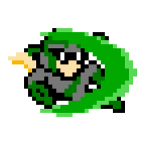
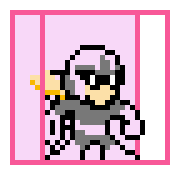

PROTO MAN
Made by Blu3s, based on a property by Capcom
WEAPONS
Type: Horizontal projectile (chargeable)
|
- Default attack option.
- Passes through walls/most hazards.
- Can be used when special moves are equipped (separate Proto Buster and Special Weapon buttons.)
- 3 levels of charge.
- If a level 2/3 shot eliminates an enemy that has less health than it's effecting power, projectile doesn't go away.
|
|
Type: Shield
|
- While equipped, all damage that reaches a player's front will be transfered to the shield's health.
- The shield's effective health is 2/3 of the normal player health (19 instead of 28).
- When health is depleated, the shield is gone.
- Cannot slide while shield is active.
|
|
Type: Movement upgrade
|  |
- Player continuously slides and damages enemies.
- Can be canceled by stopping the input or jumping.
- Slide speed and jump height is increased.
- Player is invincible while using the move up until the move is canceled or the highest point of a jump
is reached.
- Ammo lasts for ~20 seconds.
|
|
Type: Flamethrower
|
- Steam of water that shoots directly forward.
- Constant hitbox (like a flamethrower).
- Cannot penetrate walls.
- Cannot move (or jump) while firing.
|
|
Type: Time Stopper
|
- Stops time for ~4 seconds.
- Player can shoot Proto Buster during the time stop period.
- Always freezes platforms/stage hazards/enemy projectiles.
- Enemies are a different story. They all have a % vulnerability to it.
- If an enemy has an 100% vulnerability, they will freeze completely during the time stop period.
- Conversely, if it's 0%, the enemy won't be affected at all.
- Otherwise, the enemy's movements will be slowed from 25-80%.
|
|
Type: Projectile (pierce shields)
|
- Projectile penetrates walls and enemies.
- 2 shots can be on the screen at the same time.
|
|
Type: Projectile (remote control)
|
- When projectile is active, player cannot move (or jump).
When shot from the air, player has full movement until player touches the ground.
- Projectile can be steered in the compass directions and lasts for ~5 seconds.
- Projectile will self destruct if it collides with a wall.
|
|
Type: Projectile (chargeable)
|
- Missile has 3 levels of charge, similar to the Proto Buster.
- Destroys weaker projectiles on contact.
- Destructs when it comes in contact with a wall or enemy, creating a blast radius that can hurt
nearby enemies.
|
|
Type: Reflector
|  |
- When activated, the shield reflects most enemy projectiles.
- If enemies run into the shield's radius they will take damage.
- Shield lasts as long as the player doesn't take any damage.
- When fired a second time, creates two projectiles that fire in front and behind the player.
- Vs. Proto Shield:
- Wizard Wall can protect from an endless amount of projectiles while the Proto Shield has a set amount of health.
- Wizard Wall can damage enemies through contact or as a separate projectile.
- Proto Shield can block any type of damage while Wizard Wall breaks upon contact with an enemy.
- Proto Shield can be active as long as it has any amount of health left. Wizard Wall has relatively high ammo consumption to even construct the shield.
|
|
Type: Screen nuke
|
- Projectile acts as a falling projectile hitbox that will hit every enemy on screen by the time
it is done.
- The leader (smaller projectile moving up) can be used as a vertical projectile that does OK damage
|
|